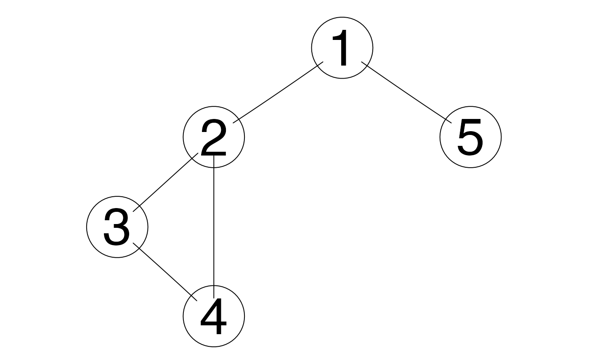

Pairs are processed to produce a graph with the elements
of the pairs as vertices and the pairs as undirected edges.
The result can be displayed using plot().
graph_pairs(x, var.names = NULL, edgemode = c("undirected", "directed"))
Arguments
| x |
|
|---|---|
| var.names | names of the variables appearing in |
| edgemode | type of edges to be used: either |
Value
a graphNEL object; can be displayed using
plot().
Note
zenplot() never use directed graphs nor graphs with isolated (disconnected) nodes.
See also
zenplot() which provides the zenplot.
Other tools related to constructing zenpaths: connect_pairs,
extract_pairs, groupData,
indexData, zenpath
Examples
## Get some pairs pairs <- matrix(c(1,2, 5,1, 3,4, 2,3, 4,2), ncol = 2, byrow = TRUE) g <- graph_pairs(pairs) ## which can be displayed using plot(g) ## if the graph package is installed. library(graph) plot(g)## Build a graph from a list of paths paths <- list(3:1, c(3,5,7), c(1,4,7), c(6,7)) gp <- graph_pairs(paths) ## graph package draws with grid, so clear grid.newpage() plot(gp)## Nodes do not need to be numbers alpha_paths <- list(letters[3:1], letters[c(3,5,7)], letters[c(1,4,7)], letters[c(6,7)]) grid.newpage() plot(graph_pairs(alpha_paths))## Zenplots never uses this feature but you could ## build a directed graph with a single isolated node dg <- graph_pairs(alpha_paths, var.names = c(letters[1:7], "ALONE"), edgemode = "directed" ) grid.newpage() plot(dg)